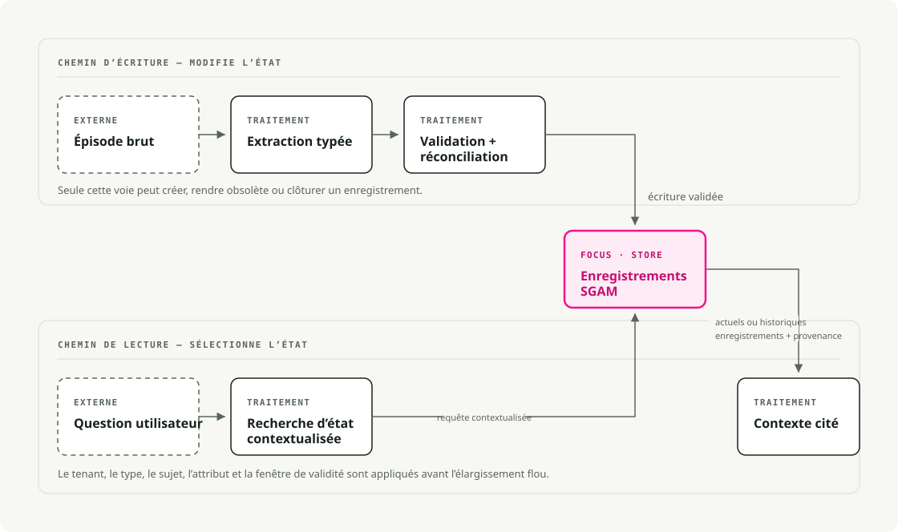

Traduction automatique
Cet article a été traduit automatiquement depuis la version originale en anglais.
Mémoire des agents IA : État typé guidé par un schéma pour les systèmes à exécution prolongée
Les agents fonctionnant sur de longues périodes échouent souvent en raison d’informations obsolètes. Le système se souvient d’une valeur, mais oublie la mise à jour qui l’a remplacée.
Imaginons un assistant qui sert une utilisateur nommée Mira. Lors d’une conversation, Mira indique que la date limite de son passeport est le 15 juillet. Plus tard, elle la corrige en indiquant le 30 juin. Une recherche vectorielle peut retrouver les deux déclarations, mais un système de mémoire doit également enregistrer que la deuxième a remplacé la première.
En résumé : considérez la mémoire persistante de l’agent comme un état d’application typé. Extraitez les éléments potentiels de cette mémoire via une interface à sortie structurée, stockez les enregistrements en tenant compte du contexte utilisateur, des plages de validité, des mécanismes de suppression, de l’origine des données ainsi que de la version du schéma, puis récupérez la partie la plus récente nécessaire lors de la lecture. Utilisez la recherche vectorielle pour une récupération approximative, mais ne considérez pas ses classements comme une source fiable pour des faits pouvant être modifiés.
Le piège de la fenêtre de contexte
La fenêtre de contexte correspond aux données disponibles pour une seule invocation d’un modèle. Une application peut transmettre des messages dans des appels ultérieurs, mais le modèle ne décide pas quels anciens faits restent valables ou qui peut y accéder.
Les agents fonctionnant sur le long terme doivent conserver en mémoire des préférences, l’état des tâches, des informations sur les clients, des décisions relatives aux outils, des notes de conformité ainsi que des erreurs antérieures. La solution la plus simple consiste à ajouter des résumés ou à stocker ces anciennes notes dans un entrepôt vectoriel. Cette approche fonctionne tant que l’un des faits mémorisés ne change pas.
L’agent dispose désormais de deux échéances de passeport, de deux formats préférés ou de deux décisions relatives à un projet. La recherche sémantique peut restituer les deux informations. Un résumé peut effacer l’une d’elles. Un contexte détaillé peut présenter l’information obsolète à côté de l’information en vigueur. Ces approches permettent de récupérer du texte, mais elles ne peuvent pas imposer quelle valeur est actuelle.
Le contrat doit répondre à des questions concrètes :
- Qu’est-ce qui est vrai actuellement ?
- Qu’est-ce qui était vrai le 2 juin ?
- Qui l’a dit ?
- À quel locataire cela appartient-il ?
- Quel fait antérieur a été remplacé par ce fait ?
- Puis-je le supprimer ou le faire expirer ?
Schema-Guided Agent Memory (SGAM) stocke ces réponses sous forme de champs et de relations, plutôt que de les laisser implicites dans du texte narratif.
Ce que signifie SGAM
Trois noms similaires apparaissent dans ce sujet, mais ils désignent des concepts différents.
Schema-Guided Dialogue (SGD) est l’ensemble de données sur les dialogues orientés tâche de Google de 2019. Son schéma décrit les API de service, les intentions et les slots, afin qu’un modèle de dialogue puisse suivre l’état des services qu’il n’a jamais vus auparavant. C’est un précédent utile, mais il concerne des services de dialogue plutôt que une mémoire persistante pour les agents.
Schema-Guided Memory (SGM) est le terme de recherche utilisé par Mei et al. dans According to Me: Long-Term Personalized Referential Memory QA. Cet article compare la mémoire descriptive (DM) en texte libre avec des éléments de mémoire clé-valeur à schéma fixe. Les informations sources sont identiques ; seule la représentation change.
Dans cet article, j’utilise Schema-Guided Agent Memory (SGAM) pour désigner un pattern d’ingénierie dans lequel les schémas gouvernent les écritures, mises à jour, récupérations et suppressions. Le schéma définit l’état de l’application, et non simplement le formatage d’une note.
ATM-Bench illustre pourquoi la représentation des données est cruciale. Il utilise environ quatre ans de données personnelles provenant d’e-mails, d’images et de vidéos. Les questions posées exigent des références personnelles, une localisation précise, plusieurs preuves, ainsi que des mises à jour au fil du temps. Les performances chutent avec la méthode de séparation stricte, tandis que SGM s’améliore par rapport à DM, car le moteur de recherche peut traiter directement des champs tels que l’heure, la source, la localisation, les entités et les étiquettes.
SGM versus DM répond à une question liée au stockage : la mémoire doit-elle rester sous forme de texte libre, ou doit-elle utiliser des champs nommés ? Un agent de production se heurte à un autre problème avant le stockage : il doit déduire, à partir d’une conversation non structurée, une mise à jour appropriée pour la mémoire. Le Reasoning guidé par schéma (SGR) définit ce parcours décisionnel : examiner les preuves, identifier le sujet et l’attribut, vérifier si le fait modifie l’état existant, puis générer une proposition d’écriture. SGAM applique ensuite les règles de stockage et de cycle de vie suite à cet appel du modèle.
SGR constitue le point de contrôle des écritures
Structured Output (SO) impose la structure de l’objet proposé. Schema-Guided Reasoning (SGR) va plus loin en codifiant les étapes et l’ordre que le modèle doit suivre pour aboutir à cette proposition. Schema-Guided Agent Memory (SGAM) prend le relais après l’appel du modèle et gère cette proposition en tant qu’état durable.
J’ai écrit à plusieurs reprises sur le SGR. La version originale vLLM et l’article sur XGrammar ont décrit le mécanisme. Des articles ultérieurs l’ont appliqué à juges structurés, planificateurs et routeurs, et grilles d’évaluation RAG reproductiblesDans chaque cas, le schéma décrivait à la fois les champs de raisonnement intermédiaires et la décision finale. Structured Output permettait d’appliquer des contraintes à ce schéma lors du décodage.
Un verdict, une route ou un plan expire généralement avec la requête en cours. Une nouvelle exécution peut consulter un élément mémorisé des jours plus tard ou l’utiliser pour choisir une appel d’outil. Cette durée de vie plus longue exige des règles de stockage que SGR ne fournit pas.
SGR restreint un appel de modèle en définissant sa topologie de raisonnement. Pour une écriture dans la mémoire, le schéma peut exiger des preuves sources, un sujet et des attributs normalisés, une comparaison avec l’état actuel, et uniquement ensuite la mise à jour proposée. Pydantic ou JSON Schema décrit cette séquence. Structured Output natif du fournisseur ou un environnement de décodage guidé comme XGrammar empêchent le modèle de sauter des champs ou de retourner une structure différente.
Cela ne garantit pas pour autant que la conclusion soit correcte. Il s’agit plutôt de rendre le chemin de décision requis explicite et inspectable, au lieu d’accepter un objet final sans aucune indication sur la manière dont le modèle y est parvenu.
SGAM décide de ce qui se passe une fois cet objet créé. Faut-il le stocker ? Remplace-t-il un fait plus ancien ? Quel utilisateur en a accès ? S’agit-il d’une donnée actuelle ou historique ? Quel épisode source le justifie ?
Tous les trois utilisent des schémas, ce qui les rend facilement confondables avec un seul mécanisme. Ils fonctionnent à des niveaux différents : le SO contrôle la forme générée, le SGR définit le parcours allant des preuves à la décision, et le SGAM gère l’état persistant.
| Dimension | SO | SGR | SGAM |
|---|---|---|---|
| Objectif | Retournez un objet conforme à un schéma | Guider le modèle le long d’un chemin de raisonnement prédéfini | Gérer la mémoire persistante après l’appel au modèle |
| Champ d’application | Une réponse générée | Un chemin de raisonnement et de décision dans une appel de modèle | Enregistrements utilisés entre les appels, les sessions et les exécutions |
| Rôle de schéma | Définit les champs de sortie, leurs types et les valeurs autorisées | Définit les étapes de raisonnement intermédiaires ainsi que la décision finale | Définit les enregistrements stockés, les relations ainsi que le cycle de vie |
| Application | Sortie invalide du schéma des blocs de décodage contraints | Utilise SO pour exiger chaque étape déclarée ainsi que la décision finale. | Validation de l’application, contraintes de base de données et règles de conflit |
| Durée de vie | Appel en cours, à moins que l’application ne stocke l’objet | La trace de raisonnement est généralement éliminée après la prise de décision | Persiste jusqu’à ce qu’il soit mis à jour, expire ou soit supprimé |
| Mode de défaillance | Forme valide mais signification incorrecte | Les étapes requises sont présentes, mais le raisonnement peut encore être erroné. | État obsolète, pollué, non délimité ou non auditable |
Sur le chemin d’écriture, la séquence est :
SGR reasoning schema + Structured Output -> candidate write -> SGAM policy and persistence
SGR guide le modèle le long du chemin d’extraction et de prise de décision prédéfini. Structured Output impose ce chemin et génère le résultat correspondant. MemoryDelta objet. Ensuite, SGAM applique des vérifications relatives au locataire, une politique de gestion des conflits, des plages de validité, des informations sur l’origine des données et des règles de conservation avant d’appliquer le delta. memory_models.py définit l’objet transmis depuis l’extraction vers le service d’écriture SGAM :
from datetime import datetime
from pydantic import BaseModel, Field
class MemoryDelta(BaseModel):
tenant_id: str = Field(description="Isolation boundary, e.g. acme")
subject: str = Field(description="Normalized entity ID, e.g. mira")
attribute: str = Field(description="Property being updated")
value: str = Field(description="New value")
valid_from: datetime
source_episode_id: str
MemoryDelta capture ce que le modèle a extrait. Le service d’écriture SGAM décide toujours s’il faut le rejeter, le fusionner ou le stocker.
Les deux flux
SGAM dispose d’un chemin d’écriture et d’un chemin de lecture. Seul le chemin d’écriture modifie l’état stocké. Le chemin de lecture sélectionne les enregistrements nécessaires pour la demande en cours.
Le flux d’ingestion correspond au chemin d’écriture :
- Capturer une épisode brut à partir de messages, de résultats d’outils ou d’événements métier.
- Extraire des candidats structurés via une sortie organisée.
- Valider le schéma et rejeter les écritures mal formatées.
- Résoudre les conflits, fermer les faits obsolètes et conserver la provenance.
- Enregistrer l’enregistrement dans le stockage SGAM.
Le flux de demande correspond au chemin de lecture :
- Commencez par la question de l’utilisateur.
- Déterminez si la question nécessite l’état actuel ou un état à un instant donné.
- Filtrez en fonction du locataire, du type de mémoire, du sujet, de l’attribut et de la fenêtre de validité.
- Ajoutez une expansion vectorielle ou graphique uniquement lorsque la recherche d’un état exact n’est pas suffisante.
- Assemblez le contexte cité le plus réduit pour le modèle.

Lisez ce diagramme de gauche à droite en deux voies. La voie supérieure écrit dans la mémoire, tandis que la voie inférieure la lit. Les deux utilisent le même stockage.
Ce qui doit figurer dans un schéma de mémoire
Un enregistrement SGAM minimal nécessite plus que text.
tenant_id
memory_id
subject
attribute
value
memory_type
schema_version
valid_from
valid_to
supersedes_memory_id
source_episode_id
confidence
retention_policy
Avec ces champs, une nouvelle date limite de passeport peut remplacer l’ancienne sans effacer l’historique. La même table permet de répondre aux requêtes relatives à la situation actuelle ainsi qu’à des points précis dans le temps, puis de retracer le résultat jusqu’à son épisode d’origine. schema_version prend en charge les migrations, tout en retention_policy indique aux tâches de suppression quels autres éléments ils doivent également supprimer.
RAG récupère les documents. SGAM gère l’état mutable.
La recherche vectorielle reste indispensable dans le système pour la récupération floue, le clustering et l’expansion. Mais la valeur actuelle de mira.passport_deadline Il doit provenir d’un enregistrement de mémoire ciblé, et non du premier morceau qui se trouve être classé en tête.
Un exemple de fait obsolète
Comparez deux représentations des mêmes épisodes : une ligne de base DM et un registre SGAM.
e1: Mira prefers concise answers. Her passport deadline is 2026-07-15.
e2: Mira corrected the deadline. It is now 2026-06-30.
Une ligne de base DM conserve les deux épisodes sous forme de texte libre, permettant ainsi à la recherche de texte de restituer des résultats. e1 car il contient les mots appropriés. SGAM extrait un fait saisi à partir de chaque épisode, identifié par locataire, sujet et attribut. Il doit renvoyer e2 en tant qu’état actuel et conserver e1 pour une requête historique.
La fonction suivante correspond au code de chemin d’écriture SGAM. Elle se trouverait dans un module de stockage tel que sgam_store.py. DM ne dispose pas d’équivalent, car il ne conserve pas de ligne actuelle par attribut. Avant que l’appelant n’insère une valeur de remplacement, cette fonction ferme la ligne actuelle :
def close_previous_fact(db: sqlite3.Connection, fact: MemoryFact) -> int | None:
row = db.execute(
"""
select fact_id
from memory_facts
where tenant_id = ?
and subject = ?
and attribute = ?
and valid_to is null
order by valid_from desc
limit 1
""",
(fact.tenant_id, fact.subject, fact.attribute),
).fetchone()
if not row:
return None
db.execute(
"update memory_facts set valid_to = ? where fact_id = ?",
(fact.valid_from, row["fact_id"]),
)
return int(row["fact_id"])
Lorsque e2 Lorsqu’il arrive, la fonction est déclenchée. valid_to sur le fait extrait de e1 vers e2sa date et heure de modification. L’appelant insère ensuite ce nouveau fait avec une entrée ouverte. valid_to. Le DM ne dispose d’aucune étape d mise à jour équivalente, ce qui permet au texte ancien de conserver un rang supérieur à la version corrigée.
L’exécution de requêtes sur les délais actuels et historiques avec ces deux représentations produit des résultats différents :
Naive text memory:
returned episode: e1 -> passport deadline is 2026-07-15
SGAM current state:
mira.passport_deadline = 2026-06-30
valid_from=2026-06-03T10:00:00Z, source=e2
SGAM point-in-time state:
on 2026-06-02, mira.passport_deadline = 2026-07-15
En environnement de production, associez cette transaction à une extraction structurée sur le chemin d’écriture. La transaction de base de données met à jour la validité temporelle. Le modèle extrait un fait candidat, mais ne décide pas quel enregistrement stocké reste actuel.
Carte des outils
Les projets utilisent plusieurs noms pour désigner les différentes composantes de ce schéma : entrepôts mémoire, graphes de contexte, profils, entrepôts à long terme, graph RAG et agents à état.
| Outil ou framework | Couche de stockage principale | Gestion temporelle | Mécanisme de schéma | Niche pratique |
|---|---|---|---|---|
| Zep / Graphiti | Neo4j, FalkorDB, Neptune, prise en charge des systèmes Kuzu anciens | Élevé | Entité Pydantic et types d’arêtes, arêtes temporelles, provenance | Mémoire de graphe temporel |
| LangGraph / LangMem | LangGraph stores, stores basés sur Postgres | Moyen | JSON permet de stocker des profils Pydantic ou d’extraire des collections | Les applications d’agent déjà développées sur LangGraph |
| Mem0 | Stack gérée, backends Valkey / Redis / vector dans des configurations OSS | Moyen | Types de mémoire, catégories personnalisées, prompts d’extraction | Mémoire utilisateur, d’agent et de session en tant que service |
| Letta / MemGPT | État de l’agent et blocs de mémoire gérés par une base de données | Faible | Agents à état disposant d’une gestion du contexte de type système d’exploitation | |
| Cognee | Backends graphiques, vectoriels et relationnels | Moyen | Extraction et validation orientées ontologie | Mémoire du graphe de connaissances d’entreprise |
| Graphe de propriétés de LlamaIndex | Les entrepôts de graphes de propriétés et les entrepôts vectoriels | Faible à moyen | SchemaLLMPathExtractor avec les entités et relations autorisées |
Extraction de graphes à partir de documents et de traces |
Graphiti constitue une implémentation en code ouvert de mémoire relationnelle et temporelle. Il suive l’évolution des faits au fil du temps, conserve des pointeurs vers les épisodes sources et prend en charge des méthodes de récupération hybrides. LangGraph sépare les points de contrôle par thread des stockages inter-thread. Mem0 encapsule les opérations de mémoire sous forme de service géré. Letta utilise des blocs de contexte modifiables plutôt que des systèmes SGAM au niveau des champs, mais elle traite néanmoins l’état de l’agent comme des données persistantes.
Commencez par le modèle de données. Lorsque la recherche de faits précis constitue l’opération principale, une table relationnelle contenant des en-têtes JSON, des colonnes de validité, des index par locataire, ainsi qu’un sidecar vectoriel suffit généralement. Ajoutez un graphe uniquement si la navigation entre relations fait partie des fonctionnalités du produit, et non parce que la démonstration basée sur le graphe est impressionnante.
Ordre d’implémentation
D’abord, déterminez ce que le produit est autorisé à mémoriser. Le choix entre représentation graphique et vecteur sera abordé plus tard.
Un agent de support peut conserver en mémoire le niveau du compte, les cas ouverts ainsi que les préférences de contact durables. Il ne doit pas transformer systématiquement chaque demande frustrée en une entrée dans le profil utilisateur. Un agent de codage peut mémoriser les conventions de dépôt et les tâches non résolues. Il ne doit pas conserver indéfiniment une note privée simplement parce qu’elle a été consultée une seule fois.
Commencez par le flux d’écriture et considérez la mémoire comme une petite mutation d’état :
- Nommez le type de mémoire, le sujet, la portée du locataire et la classe de conservation.
- Extraitez les enregistrements candidats avec un résultat structuré.
- Validez le chargement de données à l’aide de Pydantic ou de la couche de schéma déjà utilisée dans votre stack.
- Résolvez les conflits avant insertion, y compris pour déterminer si le nouvel enregistrement remplace l’ancien.
- Conservez un pointeur source vers l’épisode brut, le résultat de l’outil, le fichier, le ticket ou la confirmation de l’utilisateur qui a généré l’enregistrement.
- Indiquez la version du schéma avec chaque enregistrement, plutôt que de la laisser uniquement dans le code de l’application.
Le premier stockage SGAM peut être une table relationnelle disposant d’une colonne JSON et de quelques index. Un graphe devient utile lorsque le produit doit parcourir des relations telles que client-compte, compte-politique, tâche-artefact ou projet-décision.
Flux principal et écritures en arrière-plan
L’extraction immédiate est justifiée lorsque la prochaine action dépend de cette nouvelle mémoire. Si l’utilisateur demande de « se souvenir que je préfère des réponses courtes », le système ne doit pas attendre une tâche nocturne pour modifier son comportement.
La plupart des interactions n’ont pas besoin d’une écriture immédiate. Conservez l’épisode brut avec les métadonnées relatives au tenant, à la session et à l’outil, puis laissez un travailleur en arrière-plan extraire les candidats ultérieurement. Grâce à la consolidation basée sur la récurrence, ce travailleur met en buffer les signaux faibles et ne valide un fait qu’après que des preuves similaires se soient reproduites ou que l’utilisateur l’ait confirmé. Cela entraîne un délai de mise à jour. Cela est acceptable dans le cas où « l’utilisateur demande fréquemment des exportations en CSV », mais risqué lorsque « le client a modifié son adresse de livraison ».
Garantissez que le chemin de lecture soit déterministe. Appliquez d’abord les contraintes de portée et de validité liées au tenant, puis utilisez la recherche floue uniquement lorsque cela peut apporter un contexte utile.
- Filtrez par tenant, type de mémoire et fenêtre de validité.
- Récupérez d’abord l’état structuré exact, avant les voisins sémantiques.
- Utilisez l’expansion vectorielle ou graphique pour obtenir des preuves complémentaires, des entités associées et des exemples, mais non comme source d’autorité pour les faits actuels.
- Assemblez le plus petit contexte cité capable de répondre à la question.
Traitez la migration du schéma comme une tâche liée au produit. Lorsqu’un enregistrement de mémoire change de structure, le comportement de l’agent change également : ce qu’il peut se remémorer, ce qu’il peut citer, ce qu’il peut supprimer, ainsi que quels anciens faits restent considérés comme actuels. Gardez les scripts de migration, les données de rattrapage, les fenêtres de lecture doubles et le comportement de suppression dans le même plan de déploiement que la modification du produit.
Lorsque SGAM justifie cette complexité
Utilisez SGAM lorsque les faits peuvent évoluer dans le temps :
- Préférences utilisateur pouvant être mises à jour ou annulées
- Données clients ou comptes soumises à des exigences d’audit
- État des tâches pour les assistants à exécution prolongée
- Mémoire de projet du code-agent
- État partagé entre plusieurs agents
- Notes de conformité où l’origine des données est cruciale
- Questions temporelles telles que « En quoi croyions-nous avant la migration ? »
SGAM est un surcroît de complexité lorsque la mémoire est éphémère, exploratoire ou peu coûteuse à recalculer. Si l’agent n’a besoin que de quelques étapes de continuité, un point de contrôle ainsi qu’un historique de messages réduit suffisent. Le contrôle qualité de documents statiques peut nécessiter uniquement RAG. De plus, si le domaine est si instable que le schéma change chaque jour, une mémoire structurée ralentira l’équipe.
Liste de vérification d’évaluation
Il ne suffit pas de lire la réponse finale. Un système de mémoire peut produire une réponse plausible après avoir enregistré une information erronée, récupéré une donnée obsolète ou franchi une limite de tenant.
J’utilise la même segmentation par étapes que dans mon Article d’évaluation RAG. Mesurez l’étape à laquelle une défaillance peut survenir, plutôt que de limiter l’évaluation au texte généré. La discipline de suivi provenant de l’article d’évaluation des agents Cela s’applique également car une erreur de mémoire apparaît souvent dans l’historique des exécutions avant même que la solution ne soit obtenue.
J’examinerais SGAM en utilisant la fonction de rejouement. J’alimenterais l’écriteur de mémoire avec une séquence fixe d’épisodes, j’inspecterais le registre après chaque tour significatif, puis je poserais des questions relatives à l’état actuel et au moment précis en me basant sur le stockage résultant.
| Couche | Échec que vous recherchez | Mesures |
|---|---|---|
| Écrire l’extraction | L’agent a omis un fait, en a inventé un, ou a généré une forme invalide. | Taux d’écriture valide selon le schéma, précision/recouvrement de l’extraction, couverture des épisodes sources |
| Gestion des conflits | Un fait obsolète est resté en vigueur, ou un fait ancien valide a été écrasé. | Correctitude de la suppression, taux de doublons, correctitude de l’invalidation des faits obsolètes |
| Isolation et politiques | Fuite de mémoire entre utilisateurs ou persistance au-delà de la durée autorisée par la politique. | Échecs d’isolation des tenants, correction des opérations de suppression, conformité en matière de conservation des données |
| Recherche de lecture | Le enregistrement correspondant existe bien, mais le lecteur ne l’a pas récupéré. | Précision à l’état actuel, précision en temps réel, taux de rappel@k sur les enregistrements de mémoire |
| Ancrage de la réponse | La réponse a utilisé de la mémoire sans justification adéquate ou a cité une source incorrecte. | Demander un soutien concernant les épisodes sources, la précision des citations et la correction de la résolution des conflits |
| Opérations | Le chemin mémoire est trop lent, trop obsolète ou trop coûteux. | p95 de latence d’écriture, retard de fraîcheur, latence de lecture, coût par requête |
Des benchmarks tels que LoCoMo, LongMemEval, et ATM-Bench Fournissez des cas de test publics. Ceux-ci ne remplacent pas un ensemble de tests spécifique au domaine. Un assistant de codage, un bot de support client et un copilote de conformité nécessitent des schémas, des filtres, des règles de conservation et des tests d’échec distincts.
Précautions
SGAM est mon étiquette pour un motif, et non une norme. Les projets existants abordent le problème de manière différente. Mémoire LangGraph et LangMem Décrivez les mémoires à court et long terme, les profils, les collections, les écritures sur les chemins fréquents, ainsi que les gestionnaires de mémoire en arrière-plan. Zep Graphiti utilise le terme « graphe de contexte temporel ». Letta permet de conserver des blocs de mémoire modifiables, tandis que Mem0 offre une couche de mémoire gérée. Microsoft GraphRAG, les graphes de propriétés LlamaIndex et les cadres Cognee modélisent certaines parties du problème sous forme de graphes de connaissances.
Un profil d’utilisateur, un journal d’épisodes, un graphe de documents ainsi qu’un bloc de mémoire éditable par l’agent permettent de résoudre des problèmes différents en matière de récupération et de mise à jour. J’ai réservé SGAM à la mémoire persistante qui représente l’état actuel de l’application et qui nécessite donc un schéma, une validation, une traçabilité, un traitement des conflits, une politique de conservation et des mécanismes de migration.
Une mémoire structurée peut tout de même contenir des erreurs. Un schéma facilite l’inspection des écritures erronées, mais il ne garantit pas leur fiabilité. Il reste nécessaire de faire confiance à la source, d’obtenir la confirmation de l’utilisateur pour les informations sensibles, de mettre en œuvre une politique de gestion des conflits, de prévoir des opérations de suppression et d’assurer un suivi.
La migration de schémas est une tâche complexe. Une fois que la mémoire devient un état persistant, vous êtes responsable de la gestion des versions, des données de remplacement, des anciens enregistrements ainsi que du comportement de suppression. En évitant cette démarche, les anciens enregistrements survivront aux politiques sémantiques ou de conservation qui les ont créés.
Points clés
- La fenêtre de contexte fournit les entrées pour le tour actuel. La mémoire de l’agent durable nécessite un contrat d’état distinct.
- SGR définit le chemin de raisonnement menant à une écriture candidate, Structured Output le met en œuvre, tandis que SGAM gère le registre après validation.
- Le rappel vectoriel est utile, mais les faits actuels exigent une définition de portée, de validité, de suppression et de provenance.
- Commencez par un registre mémoire relationnel simple ou basé sur JSON avant de recourir à un graphe.
- Évaluez la mémoire en fonction de la correction des écritures, du rappel temporel, du rattachement aux données réelles, de l’isolation des utilisateurs et du comportement de suppression.
Références
- Selon moi : Vérification de la qualité des données dans la mémoire référentielle personnalisée à long terme - Article de Mei et al. présentant ATM-Bench et la mémoire guidée par schéma. Vers des agents conversationnels multi-domaines scalables : l’ensemble de données de dialogue guidé par un schéma - Article de Rastogi et al. sur l’ensemble de données SGD. LongMemEval : Évaluation des assistants de conversation basés sur une mémoire interactive à long terme - Le benchmark de Wu et al. pour les capacités de mémoire à long terme. Graphiti : Création de graphes de contexte temporel pour les agents IA
- Zep : une architecture de graphe de connaissances temporel pour la mémoire des agents
- Aperçu de la plateforme Mem0
- Mem0 : Création d’agents IA prêts pour la production dotés d’une mémoire à long terme scalable
- Vue d’ensemble de la mémoire LangGraph
- Persistance de LangGraph
- Documentation LangMem
- Letta : Introduction aux agents à état
- Documentation Microsoft GraphRAG
- LlamaIndex : utilisation d’un index de graphe de propriétés
- Documentation Cognee
- Documentation de validation des modèles Pydantic
- Documentation de Python sqlite3